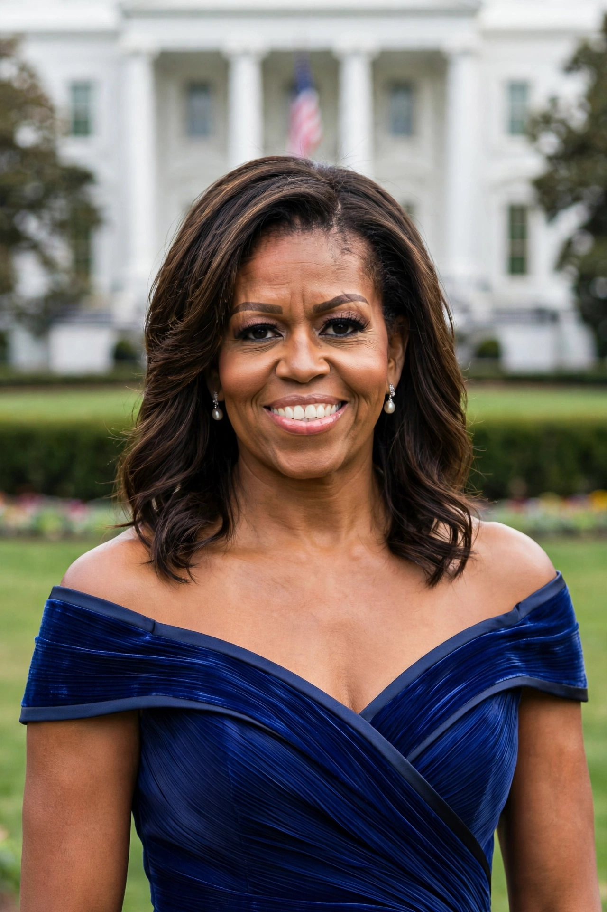

Michelle LaVaughn Robinson Obama (born January 17, 1964) is an American attorney and author who served as First Lady of the United States from 2009 to 2017 as the wife of Barack Obama, the 44th president. Raised on Chicago's South Side, she graduated from Princeton University and Harvard Law School and worked in law, city government and non-profit leadership before becoming a national figure during the 2008 presidential campaign.

| Born | Michelle LaVaughn Robinson, 17 January 1964, Chicago, Illinois, US |
|---|---|
| Role | First Lady of the United States (2009–2017) |
| Spouse | Barack Obama (m. 1992) |
| Children | Malia, Sasha |
| Education | Princeton University (AB), Harvard University (JD) |
Robinson grew up in the South Shore neighbourhood; her father Fraser Robinson III worked at the city water plant and her mother Marian was a homemaker and later a secretary. She attended Whitney Young High School, studied sociology at Princeton (1985), and earned her JD from Harvard Law in 1988. At the Chicago firm Sidley Austin she met summer associate Barack Obama; they married in 1992. She later served as assistant to Mayor Richard M. Daley, founded Public Allies Chicago, and held posts at the University of Chicago and its Medical Center.
As First Lady she championed Let's Move! against childhood obesity, the Reach Higher education initiative, Let Girls Learn, and Joining Forces for military families with Jill Biden. She planted the White House Kitchen Garden, advocated healthy school meals, and was widely noted as a fashion icon and popular orator, delivering acclaimed convention speeches in 2012, 2016 and 2020.
Her memoir Becoming (2018) sold over 17 million copies and won a Grammy for its audiobook; a documentary followed in 2020. With her husband she founded Higher Ground Productions, producing Netflix films and the podcast projects, and wrote The Light We Carry (2022). She remains among the most admired women in US public life polls.